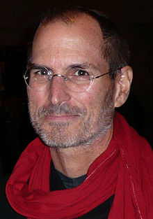

Steven Paul "Steve" Jobs (February 24, 1955 – October 5, 2011) was an American businessman, inventor, and industrial designer. He was the co-founder, chairman, and chief executive officer (CEO) of Apple Inc.; CEO and majority shareholder of Pixar Animation Studios;a member of The Walt Disney Company's board of directors following its acquisition of Pixar; and founder, chairman, and CEO of NeXT Inc. Jobs is widely recognized as a pioneer of the microcomputer revolution of the 1970s and 1980s, along with Apple co-founder Steve Wozniak. Shortly after his death, Jobs's official biographer, Walter Isaacson, described him as a "creative entrepreneur whose passion for perfection and ferocious drive revolutionized six industries: personal computers, animated movies, music, phones, tablet computing, and digital publishing."
Jobs's countercultural lifestyle and philosophy was a product of the time and place of his upbringing. Jobs was adopted at birth in San Francisco, and raised in a hotbed of counterculture, the San Francisco Bay Area during the 1960s.[4] As a senior at Homestead High School in Cupertino, California, his two closest friends were the older engineering student (and Homestead High alumnus) Wozniak and his girlfriend, the artistically inclined and countercultural Homestead High junior Chrisann Brennan.Jobs and Wozniak bonded over their mutual fascination with Jobs's musical idol Bob Dylan, discussing his lyrics and collecting bootleg reel-to-reel tapes of Dylan's concerts.[6] Jobs later dated Joan Baez who notably had a prior relationship with Dylan.Jobs briefly attended Reed College in 1972 before dropping out.[5] He then decided to travel through India in 1974 seeking enlightenment and studying Zen Buddhism.Jobs's declassified FBI report says an acquaintance knew that Jobs used illegal drugs in college including marijuanaand LSD.Jobs told a reporter once that taking LSD was "one of the two or three most important things" he did in his life.
Jobs co-founded Apple in 1976 to sell Wozniak's Apple I personal computer. The duo gained fame and wealth a year later for theApple II, one of the first highly successful mass-produced personal computers. In 1979, after a tour of Xerox PARC, Jobs saw the commercial potential of the Xerox Alto, which was mouse-driven and had a graphical user interface (GUI). This led to development of the unsuccessful Apple Lisa in 1983, followed by the very successful Macintosh in 1984. In addition to being the first mass-produced computer with a GUI, the Macintosh instigated the sudden rise of the desktop publishing industry in 1985 with the addition of the Apple LaserWriter, the first laser printer to feature vector graphics. Following a long power struggle, Jobs was forced out of Apple in 1985.
After leaving Apple, Jobs took a few of its members with him to found NeXT, a computer platform development company specializing in state-of-the-art computers for higher-education and business markets. In addition, Jobs helped to initiate the development of thevisual effects industry when he funded the spinout of the computer graphics division of George Lucas's company Lucasfilm in 1986.The new company, Pixar, would eventually produce the first fully computer-animated film, Toy Story—an event made possible in part because of Jobs's financial support.
In 1997, Apple purchased NeXT, allowing Jobs to become the former's CEO once again. He would return the company, which was on the verge of bankruptcy, back to profitability. Beginning in 1997 with the "Think different" advertising campaign, Jobs worked closely with designer Jonathan Ive to develop a line of products that would have larger cultural ramifications: the iMac, iTunes, Apple Stores, the iPod, the iTunes Store, the iPhone, the App Store, and the iPad. Mac OS was also revamped into Mac OS X, based on NeXT'sNeXTSTEP platform.